📖 はじめに（特別な花とは）
特別な花は、PREMIUMの方だけが植えられる花です。PREMIUMにご登録いただくと、その日のうちに最初の1種類が植えられるようになり、そのあとは、登録した日を1日目として数えた継続日数に応じて、10日ごとに1種類ずつ、1年分（361日目まで）の全37種類が順番に解放されます。
最初は身近で可憐な花（★1）から始まり、季節を彩る花（★2）、名花（★3）、希少な花（★4）、そして1年の後半には秘境や伝説の幻の花（★5）へと、レア度が高くなっていきます。すべて実在する花をもとにしています。
庭タブで空きマスをタップして花を選ぶシートを開き、上の「特別な花」タブに切り替えると、解放された花が並びます。次の花までの日数も、このタブに表示されます。
- 植えたあとの扱いは、通常の花と同じです。種→芽→つぼみ→開花と育ち、場所の移動や「クローバーに戻す」もできます（庭を育てる）。
- 植えるたびに、本物の花の特徴に合わせた基準サイズから大きさがランダムで決まります。大きく育つ花ほど、咲くまでの日数が長くなります。
- 咲いた特別な花は、庭の中で風にゆれながら淡くきらめきます。
- 新しい花が解放されると、アプリを開いたときにお知らせが出ます。花が咲いた日の通知と同じく、端末の通知も届きます（設定の「花の通知」）。
| 花 | レア度 | 解放される日 | 必要なクローバー | 咲くまで（標準） |
|---|---|---|---|---|
| ネモフィラ | ★☆☆☆☆ | 1日目（登録した日） | 5個 | 約4日 |
| スノードロップ | ★☆☆☆☆ | 11日目 | 5個 | 約3日 |
| クロッカス | ★☆☆☆☆ | 21日目 | 6個 | 約3日 |
| スズラン | ★☆☆☆☆ | 31日目 | 6個 | 約4日 |
| ワスレナグサ | ★☆☆☆☆ | 41日目 | 6個 | 約4日 |
| ラベンダー | ★☆☆☆☆ | 51日目 | 7個 | 約5日 |
| アネモネ | ★☆☆☆☆ | 61日目 | 7個 | 約5日 |
| アジサイ | ★☆☆☆☆ | 71日目 | 8個 | 約5日 |
| ガーベラ | ★★☆☆☆ | 81日目 | 9個 | 約5日 |
| キキョウ | ★★☆☆☆ | 91日目 | 9個 | 約6日 |
| アサガオ | ★★☆☆☆ | 101日目 | 10個 | 約6日 |
| リンドウ | ★★☆☆☆ | 111日目 | 10個 | 約6日 |
| ツバキ | ★★☆☆☆ | 121日目 | 11個 | 約7日 |
| プルメリア | ★★☆☆☆ | 131日目 | 11個 | 約7日 |
| ブルーハイビスカス | ★★☆☆☆ | 141日目 | 12個 | 約7日 |
| ハナショウブ | ★★☆☆☆ | 151日目 | 12個 | 約7日 |
| ソメイヨシノ | ★★★☆☆ | 161日目 | 14個 | 約8日 |
| ハス（蓮） | ★★★☆☆ | 171日目 | 14個 | 約8日 |
| 藤 | ★★★☆☆ | 181日目 | 15個 | 約8日 |
| ヒガンバナ | ★★★☆☆ | 191日目 | 15個 | 約8日 |
| 極楽鳥花 | ★★★☆☆ | 201日目 | 16個 | 約9日 |
| カサブランカ | ★★★☆☆ | 211日目 | 16個 | 約9日 |
| ジャカランダ | ★★★☆☆ | 221日目 | 17個 | 約9日 |
| キングプロテア | ★★★☆☆ | 231日目 | 17個 | 約9日 |
| エーデルワイス | ★★★★☆ | 241日目 | 18個 | 約10日 |
| サギソウ | ★★★★☆ | 251日目 | 19個 | 約10日 |
| ブラックキャット | ★★★★☆ | 261日目 | 20個 | 約10日 |
| 月下美人 | ★★★★☆ | 271日目 | 21個 | 約10日 |
| カトレア | ★★★★☆ | 281日目 | 21個 | 約11日 |
| ヒスイカズラ | ★★★★☆ | 291日目 | 22個 | 約11日 |
| ゴーストオーキッド | ★★★★☆ | 301日目 | 23個 | 約11日 |
| キンカチャ（金花茶） | ★★★★★ | 311日目 | 24個 | 約12日 |
| カドゥプル | ★★★★★ | 321日目 | 25個 | 約12日 |
| ミドルミスト・レッド | ★★★★★ | 331日目 | 26個 | 約12日 |
| ヒマラヤの青いケシ | ★★★★★ | 341日目 | 27個 | 約13日 |
| バオバブの花 | ★★★★★ | 351日目 | 28個 | 約13日 |
| ブルーローズ | ★★★★★ | 361日目 | 30個 | 約14日 |
🌸 特別な花の紹介（全37種）
アプリ内の絵と、本物の花の特徴です。開花時期などは目安で、地域や年によって変わります。
ネモフィラ（瑠璃唐草）（Nemophila）
春の丘をまるごと青く染める、空色の小さな花

- レア度: ★1 身近で可憐な花
- 解放される日: PREMIUMの継続日数が1日目（登録した日）になると、植えられるようになります。
- 必要なクローバー: 5個（片付けて「クローバーに戻す」と、同じ数が戻ります）。
- 咲くまでの日数: 標準の大きさで約4日（植えるたびに大きさがランダムで決まり、大きいほど日数が長くなります）。
本物のネモフィラについて
北アメリカ（カリフォルニア）が原産の一年草です。和名は「瑠璃唐草（ルリカラクサ）」。春（4〜5月ごろ）に直径2〜3cmほどの澄んだ空色の花を咲かせ、群れて咲くと地面が青い絨毯のように見えます。英名は「ベビーブルーアイズ（赤ちゃんの青い目）」。
花言葉は「可憐」「どこでも成功」など。
スノードロップ（待雪草）（Snowdrop）
雪解けの季節にうつむいて咲く、春の先駆け
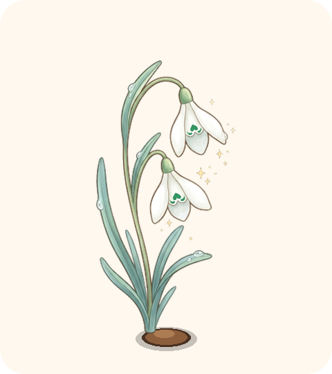
- レア度: ★1 身近で可憐な花
- 解放される日: PREMIUMの継続日数が11日目になると、植えられるようになります。
- 必要なクローバー: 5個（片付けて「クローバーに戻す」と、同じ数が戻ります）。
- 咲くまでの日数: 標準の大きさで約3日（植えるたびに大きさがランダムで決まり、大きいほど日数が長くなります）。
本物のスノードロップについて
ヨーロッパや西アジア原産の球根植物で、早春（2〜3月ごろ）に雪を割るように咲きます。3枚の長い外花被片と、緑のハート模様が入る3枚の短い内花被片が特徴です。
花言葉は「希望」「慰め」など。
クロッカス（花サフラン）（Crocus）
地面からまっすぐカップを開く、鮮やかな早春の花
- レア度: ★1 身近で可憐な花
- 解放される日: PREMIUMの継続日数が21日目になると、植えられるようになります。
- 必要なクローバー: 6個（片付けて「クローバーに戻す」と、同じ数が戻ります）。
- 咲くまでの日数: 標準の大きさで約3日（植えるたびに大きさがランダムで決まり、大きいほど日数が長くなります）。
本物のクロッカスについて
地中海沿岸から西アジア原産のアヤメ科の球根植物です。2〜4月ごろ、日差しを浴びるとカップ状の花びらを大きく広げ、夕方や曇りの日には閉じます。香辛料サフランの仲間でもあります。
花言葉は「青春の喜び」「切望」など。
スズラン（鈴蘭）（Lily of the Valley）
小さな白い鈴が連なって咲く、初夏の香り高い花
- レア度: ★1 身近で可憐な花
- 解放される日: PREMIUMの継続日数が31日目になると、植えられるようになります。
- 必要なクローバー: 6個（片付けて「クローバーに戻す」と、同じ数が戻ります）。
- 咲くまでの日数: 標準の大きさで約4日（植えるたびに大きさがランダムで決まり、大きいほど日数が長くなります）。
本物のスズランについて
ヨーロッパや日本（北海道・東北の高原など）に自生する多年草です。5〜6月ごろ、曲がった茎の先に小さな白い鈴のような花を下向きに並べて咲かせます。フランスでは5月1日に大切な人へ贈る習慣があります。
花言葉は「再び幸せが訪れる」「純粋」など。なお、本物のスズランには強い毒があるため観賞用として楽しみます。
ワスレナグサ（勿忘草）（Forget-me-not）
小さな空色の花が集まって咲く、記憶のシンボル
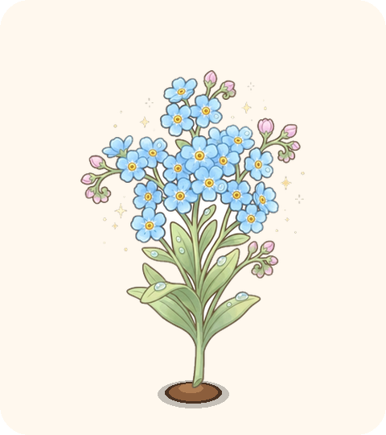
- レア度: ★1 身近で可憐な花
- 解放される日: PREMIUMの継続日数が41日目になると、植えられるようになります。
- 必要なクローバー: 6個（片付けて「クローバーに戻す」と、同じ数が戻ります）。
- 咲くまでの日数: 標準の大きさで約4日（植えるたびに大きさがランダムで決まり、大きいほど日数が長くなります）。
本物のワスレナグサについて
ヨーロッパ原産のムラサキ科の植物です。春（3〜5月ごろ）に直径1cmほどの空色の5弁花を房状に咲かせ、中心には小さな黄色の輪が入ります。つぼみのうちは淡いピンク色をしているのも魅力です。
花言葉は「私を忘れないで」「真実の愛」など。
ラベンダー（薫衣草）（Lavender）
初夏の風に爽やかな香りを運ぶ、紫のハーブ
- レア度: ★1 身近で可憐な花
- 解放される日: PREMIUMの継続日数が51日目になると、植えられるようになります。
- 必要なクローバー: 7個（片付けて「クローバーに戻す」と、同じ数が戻ります）。
- 咲くまでの日数: 標準の大きさで約5日（植えるたびに大きさがランダムで決まり、大きいほど日数が長くなります）。
本物のラベンダーについて
地中海沿岸が原産のシソ科の低木です。初夏（5〜7月ごろ）に紫色の小花を穂状に咲かせ、「ハーブの女王」とも呼ばれます。北海道・富良野の一面のラベンダー畑でも親しまれています。
花言葉は「沈黙」「あなたを待っています」「清潔」など。
アネモネ（牡丹一華）（Anemone）
ベルベットのような鮮やかな花びらと、引き締まった黒い芯
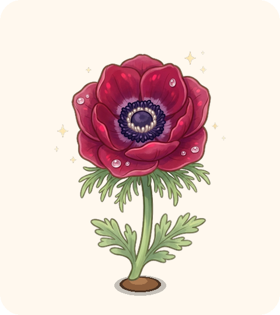
- レア度: ★1 身近で可憐な花
- 解放される日: PREMIUMの継続日数が61日目になると、植えられるようになります。
- 必要なクローバー: 7個（片付けて「クローバーに戻す」と、同じ数が戻ります）。
- 咲くまでの日数: 標準の大きさで約5日（植えるたびに大きさがランダムで決まり、大きいほど日数が長くなります）。
本物のアネモネについて
地中海沿岸原産のキンポウゲ科の球根植物です。春（3〜5月ごろ）に赤・紫・白などのくっきりとした花を咲かせます。ギリシャ語の「アネモス（風）」が名前の由来で、「風の花」とも呼ばれます。
花言葉は「はかない恋」「期待」「君を愛す」など。
アジサイ（紫陽花）（Hydrangea）
雨の季節をしっとり彩る、手まり状の青い花木
- レア度: ★1 身近で可憐な花
- 解放される日: PREMIUMの継続日数が71日目になると、植えられるようになります。
- 必要なクローバー: 8個（片付けて「クローバーに戻す」と、同じ数が戻ります）。
- 咲くまでの日数: 標準の大きさで約5日（植えるたびに大きさがランダムで決まり、大きいほど日数が長くなります）。
本物のアジサイについて
日本原産の落葉低木で、梅雨（6〜7月ごろ）に小さな花（装飾花）が集まって丸い手まり状に咲きます。土壌の酸性度によって花の色が青〜赤紫へと変わる性質でも知られています。
花言葉は「移り気」「家族団らん」「辛抱強い愛情」など。
ガーベラ（Gerbera）
太陽のように明るく広がる、華やかな花びら
- レア度: ★2 季節を彩る美しい花
- 解放される日: PREMIUMの継続日数が81日目になると、植えられるようになります。
- 必要なクローバー: 9個（片付けて「クローバーに戻す」と、同じ数が戻ります）。
- 咲くまでの日数: 標準の大きさで約5日（植えるたびに大きさがランダムで決まり、大きいほど日数が長くなります）。
本物のガーベラについて
南アフリカ原産のキク科の多年草です。春と秋を中心に、赤・ピンク・オレンジ・黄など多彩な色で、放射線状に整った花を咲かせます。花束やフラワーアレンジメントでも定番の人気を誇ります。
花言葉は「希望」「常に前進」「神秘」など。
キキョウ（桔梗）（Balloon Flower）
風船のようにふくらむつぼみと、整った星形の青紫
- レア度: ★2 季節を彩る美しい花
- 解放される日: PREMIUMの継続日数が91日目になると、植えられるようになります。
- 必要なクローバー: 9個（片付けて「クローバーに戻す」と、同じ数が戻ります）。
- 咲くまでの日数: 標準の大きさで約6日（植えるたびに大きさがランダムで決まり、大きいほど日数が長くなります）。
本物のキキョウについて
日本や東アジアに自生する多年草で、「秋の七草」のひとつです。夏〜秋（6〜10月ごろ）に、風船のようにぷっくり膨らんだつぼみが開くと、美しい星形の5弁花が現れます。
花言葉は「永遠の愛」「気品」「誠実」など。
アサガオ（朝顔）（Morning Glory）
夏の朝に涼しげなラッパを開く、日本の夏の風物詩
- レア度: ★2 季節を彩る美しい花
- 解放される日: PREMIUMの継続日数が101日目になると、植えられるようになります。
- 必要なクローバー: 10個（片付けて「クローバーに戻す」と、同じ数が戻ります）。
- 咲くまでの日数: 標準の大きさで約6日（植えるたびに大きさがランダムで決まり、大きいほど日数が長くなります）。
本物のアサガオについて
ヒルガオ科の一年草のつる植物で、奈良時代ごろに薬草として日本へ伝わり、江戸時代には多彩な園芸品種が生まれました。夏（7〜9月ごろ）の早朝に咲き、昼ごろにはしぼみます。
花言葉は「愛情」「結束」「はかない恋」など。
リンドウ（竜胆）（Gentian）
秋の山野に凛と咲く、深い瑠璃色の鐘形の花
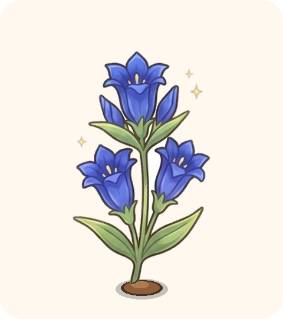
- レア度: ★2 季節を彩る美しい花
- 解放される日: PREMIUMの継続日数が111日目になると、植えられるようになります。
- 必要なクローバー: 10個（片付けて「クローバーに戻す」と、同じ数が戻ります）。
- 咲くまでの日数: 標準の大きさで約6日（植えるたびに大きさがランダムで決まり、大きいほど日数が長くなります）。
本物のリンドウについて
日本や東アジアの山地に自生する多年草です。秋（9〜11月ごろ）に鮮やかな青紫色の筒状の花を上向きに咲かせます。日差しがあると開き、雨や曇りの日は閉じます。
花言葉は「勝利」「正義感」「誠実」など。
ツバキ（椿）（Camellia）
艶やかな濃緑の葉に映える、冬から春の真紅の花木
- レア度: ★2 季節を彩る美しい花
- 解放される日: PREMIUMの継続日数が121日目になると、植えられるようになります。
- 必要なクローバー: 11個（片付けて「クローバーに戻す」と、同じ数が戻ります）。
- 咲くまでの日数: 標準の大きさで約7日（植えるたびに大きさがランダムで決まり、大きいほど日数が長くなります）。
本物のツバキについて
日本原産の常緑樹で、冬〜春（12〜4月ごろ）に厚みのある艶やかな花びらと黄金色の雄しべを咲かせます。種子から採れる椿油は古くから暮らしに親しまれてきました。
花言葉は「控えめな素晴らしさ」「気取らない優美さ」など。
プルメリア（Plumeria）
純白と中心の黄金色が溶け合う、南国の香り高い花木
- レア度: ★2 季節を彩る美しい花
- 解放される日: PREMIUMの継続日数が131日目になると、植えられるようになります。
- 必要なクローバー: 11個（片付けて「クローバーに戻す」と、同じ数が戻ります）。
- 咲くまでの日数: 標準の大きさで約7日（植えるたびに大きさがランダムで決まり、大きいほど日数が長くなります）。
本物のプルメリアについて
中南米原産のキョウチクトウ科の熱帯花木です。夏（6〜10月ごろ）に甘い香りの5弁花を咲かせ、ハワイではレイ（花飾り）の素材として愛されています。
花言葉は「気品」「恵まれた人」「日だまり」など。
ブルーハイビスカス（Blue Hibiscus）
涼やかな青紫の大輪を咲かせる、爽やかな花木
- レア度: ★2 季節を彩る美しい花
- 解放される日: PREMIUMの継続日数が141日目になると、植えられるようになります。
- 必要なクローバー: 12個（片付けて「クローバーに戻す」と、同じ数が戻ります）。
- 咲くまでの日数: 標準の大きさで約7日（植えるたびに大きさがランダムで決まり、大きいほど日数が長くなります）。
本物のブルーハイビスカスについて
オーストラリア原産のアオイ科の常緑低木（アリオギネ属）で、ハイビスカスに似た涼しげな青紫〜藤色の5弁花を初夏〜秋（5〜10月ごろ）に次々と咲かせます。
花言葉は「繊細な美」「新しい恋」「上品な美しさ」など。
ハナショウブ（花菖蒲）（Japanese Iris）
水辺にすらりと咲く、気品あふれる紫と黄の和の花
- レア度: ★2 季節を彩る美しい花
- 解放される日: PREMIUMの継続日数が151日目になると、植えられるようになります。
- 必要なクローバー: 12個（片付けて「クローバーに戻す」と、同じ数が戻ります）。
- 咲くまでの日数: 標準の大きさで約7日（植えるたびに大きさがランダムで決まり、大きいほど日数が長くなります）。
本物のハナショウブについて
日本の湿原に自生するノハナショウブをもとに、江戸時代から品種改良されてきたアヤメ科の多年草です。初夏（5〜6月ごろ）に、花びらの根元に黄色の筋が入る優美な花を咲かせます。
花言葉は「うれしい知らせ」「優雅」「心意気」など。
ソメイヨシノ（染井吉野）（Cherry Blossom）
日本の春を象徴する、淡い桃色の桜
- レア度: ★3 気品と存在感のある名花
- 解放される日: PREMIUMの継続日数が161日目になると、植えられるようになります。
- 必要なクローバー: 14個（片付けて「クローバーに戻す」と、同じ数が戻ります）。
- 咲くまでの日数: 標準の大きさで約8日（植えるたびに大きさがランダムで決まり、大きいほど日数が長くなります）。
本物のソメイヨシノについて
江戸末期に江戸・染井村（現在の東京都豊島区）で生まれたとされる桜の代表品種です。春（3〜4月ごろ）に葉より先に淡いピンクの5弁花が一斉に咲き誇り、満開のあと花吹雪となって散ります。
花言葉は「純潔」「優れた美人」「精神美」など。
ハス（蓮）（Sacred Lotus）
泥水から清らかに咲き誇る、神聖な桃色の大輪
- レア度: ★3 気品と存在感のある名花
- 解放される日: PREMIUMの継続日数が171日目になると、植えられるようになります。
- 必要なクローバー: 14個（片付けて「クローバーに戻す」と、同じ数が戻ります）。
- 咲くまでの日数: 標準の大きさで約8日（植えるたびに大きさがランダムで決まり、大きいほど日数が長くなります）。
本物のハス（蓮）について
アジア原産の水生多年草です。夏（7〜8月ごろ）の早朝に丸い葉の上へ茎を伸ばし、幾重にも重なる大輪の花を咲かせます。古くから清らかさや悟りの象徴とされてきました。
花言葉は「清らかな心」「神聖」「雄弁」など。
藤（フジ）（Wisteria）
紫の花がカーテンのように垂れ下がる、日本固有のつる植物

- レア度: ★3 気品と存在感のある名花
- 解放される日: PREMIUMの継続日数が181日目になると、植えられるようになります。
- 必要なクローバー: 15個（片付けて「クローバーに戻す」と、同じ数が戻ります）。
- 咲くまでの日数: 標準の大きさで約8日（植えるたびに大きさがランダムで決まり、大きいほど日数が長くなります）。
本物の藤について
日本に自生するマメ科のつる性木本です。春（4〜5月ごろ）に長い房になって上から下へと順に咲き、風になびく姿と甘い香りで親しまれています。棚に仕立てると見上げるほど長く垂れ下がります。
花言葉は「優しさ」「歓迎」「決して離れない」など。
ヒガンバナ（彼岸花・曼珠沙華）（Red Spider Lily）
秋の彼岸に一斉に咲く、繊細で鮮やかな真紅の花
- レア度: ★3 気品と存在感のある名花
- 解放される日: PREMIUMの継続日数が191日目になると、植えられるようになります。
- 必要なクローバー: 15個（片付けて「クローバーに戻す」と、同じ数が戻ります）。
- 咲くまでの日数: 標準の大きさで約8日（植えるたびに大きさがランダムで決まり、大きいほど日数が長くなります）。
本物のヒガンバナについて
ヒガンバナ科の球根植物で、毎年9月の秋分のころに葉のない茎だけが伸び、反り返る赤い花びらと長い雄しべが放射状に咲きます。花が散ったあとに葉が出て冬を越す独特の生態を持ちます。
花言葉は「情熱」「独立」「再会」など。なお、本物の球根などには毒があります。
極楽鳥花（ストレリチア）（Bird of Paradise）
色鮮やかな鳥が羽ばたくような造形美のトロピカルフラワー
- レア度: ★3 気品と存在感のある名花
- 解放される日: PREMIUMの継続日数が201日目になると、植えられるようになります。
- 必要なクローバー: 16個（片付けて「クローバーに戻す」と、同じ数が戻ります）。
- 咲くまでの日数: 標準の大きさで約9日（植えるたびに大きさがランダムで決まり、大きいほど日数が長くなります）。
本物の極楽鳥花について
南アフリカ原産の多年草です。オレンジ色の花びらとコバルトブルーの舌状部分が、まるで美しい極楽鳥が飛び立つ姿に見えることから名付けられました。花持ちが良く、秋〜春にかけて長く楽しめます。
花言葉は「気取った恋」「輝かしい未来」「寛容」など。
カサブランカ（Casablanca Lily）
純白の大輪と豊かな香りを放つ、ユリの女王
- レア度: ★3 気品と存在感のある名花
- 解放される日: PREMIUMの継続日数が211日目になると、植えられるようになります。
- 必要なクローバー: 16個（片付けて「クローバーに戻す」と、同じ数が戻ります）。
- 咲くまでの日数: 標準の大きさで約9日（植えるたびに大きさがランダムで決まり、大きいほど日数が長くなります）。
本物のカサブランカについて
日本原産のヤマユリなどを交配してオランダで生まれたオリエンタル・ハイブリッド系の白ユリです。夏（6〜8月ごろ）に直径20cm近い堂々とした純白の花を咲かせ、上品な香りを広げます。
花言葉は「純粋」「高貴」「雄大な愛」「祝福」など。
ジャカランダ（紫雲木）（Jacaranda）
青紫の雲のように枝いっぱいに咲く、世界三大花木
- レア度: ★3 気品と存在感のある名花
- 解放される日: PREMIUMの継続日数が221日目になると、植えられるようになります。
- 必要なクローバー: 17個（片付けて「クローバーに戻す」と、同じ数が戻ります）。
- 咲くまでの日数: 標準の大きさで約9日（植えるたびに大きさがランダムで決まり、大きいほど日数が長くなります）。
本物のジャカランダについて
中南米原産のノウゼンカズラ科の高木で、ホウオウボク・カエンボクと並ぶ「世界三大花木」のひとつです。初夏（5〜6月ごろ）に青紫色の釣鐘状の花が木全体を覆うように咲きます。
花言葉は「名誉」「栄光」など。
キングプロテア（King Protea）
王冠のように堂々と咲く、南アフリカ原産の古代植物
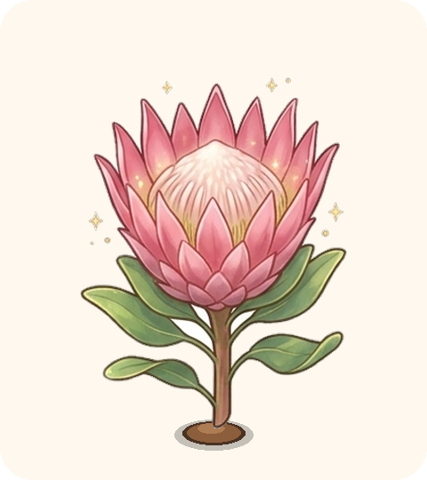
- レア度: ★3 気品と存在感のある名花
- 解放される日: PREMIUMの継続日数が231日目になると、植えられるようになります。
- 必要なクローバー: 17個（片付けて「クローバーに戻す」と、同じ数が戻ります）。
- 咲くまでの日数: 標準の大きさで約9日（植えるたびに大きさがランダムで決まり、大きいほど日数が長くなります）。
本物のキングプロテアについて
南アフリカ共和国の国花で、数千万年前から姿を変えない古代植物の仲間です。直径20〜30cmにもなる大きな花を咲かせ、鮮やかなピンクの総苞（そうほう）が王冠のように中心を包みます。
花言葉は「王者の風格」「風格」「甘い期待」など。
エーデルワイス（西洋薄雪草）（Edelweiss）
アルプスの高嶺に咲く、白い綿毛の星形の花
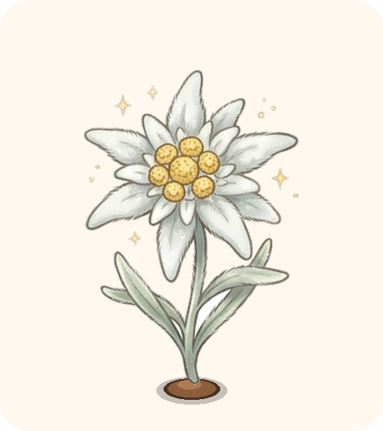
- レア度: ★4 希少で神秘的な花
- 解放される日: PREMIUMの継続日数が241日目になると、植えられるようになります。
- 必要なクローバー: 18個（片付けて「クローバーに戻す」と、同じ数が戻ります）。
- 咲くまでの日数: 標準の大きさで約10日（植えるたびに大きさがランダムで決まり、大きいほど日数が長くなります）。
本物のエーデルワイスについて
ヨーロッパアルプスの標高2,000〜3,000mの岩場に自生するキク科の高山植物です。夏（7〜9月ごろ）に、強い紫外線や寒さから身を守る白い綿毛に覆われた星形の苞葉と、中央の黄色い小花を咲かせます。
花言葉は「大切な思い出」「勇気」「尊い思い出」など。
サギソウ（鷺草）（Egret Orchid）
白鷺が翼を広げて舞う姿そのままの、繊細な湿原のラン
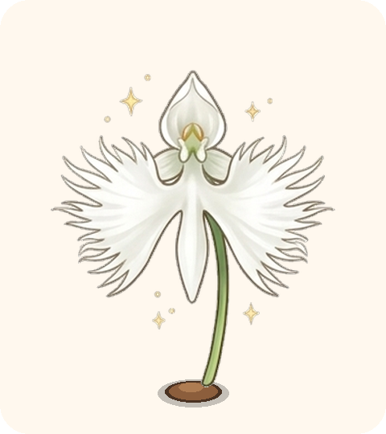
- レア度: ★4 希少で神秘的な花
- 解放される日: PREMIUMの継続日数が251日目になると、植えられるようになります。
- 必要なクローバー: 19個（片付けて「クローバーに戻す」と、同じ数が戻ります）。
- 咲くまでの日数: 標準の大きさで約10日（植えるたびに大きさがランダムで決まり、大きいほど日数が長くなります）。
本物のサギソウについて
日本や東アジアの湿地に自生するラン科の多年草です。夏（7〜8月ごろ）に、細かく切れ込んだ純白の花びらが、まるで白鷺が羽ばたく姿のように咲きます。自生地が減っており希少な存在です。
花言葉は「清純」「繊細」「夢でもあなたを想う」など。
ブラックキャット（タッカ・シャントリエリ）（Black Bat Flower）
漆黒の翼と長いひげを持つ、東南アジアの神秘的な花
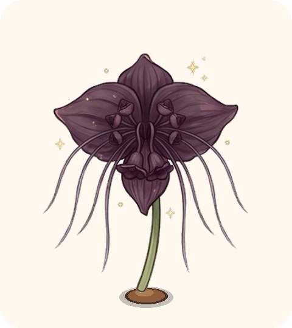
- レア度: ★4 希少で神秘的な花
- 解放される日: PREMIUMの継続日数が261日目になると、植えられるようになります。
- 必要なクローバー: 20個（片付けて「クローバーに戻す」と、同じ数が戻ります）。
- 咲くまでの日数: 標準の大きさで約10日（植えるたびに大きさがランダムで決まり、大きいほど日数が長くなります）。
本物のブラックキャットについて
東南アジアの熱帯雨林に自生するタシロイモ科の多年草です。黒紫色の大きな苞葉がコウモリの翼のように広がり、下へ糸状のひげ（小苞）が長く垂れ下がる独特の姿をしています。
花言葉は「ミステリアス」「魅惑」など。
月下美人（ゲッカビジン）（Queen of the Night）
満月の夜にただ一晩だけ咲く、純白の大輪
- レア度: ★4 希少で神秘的な花
- 解放される日: PREMIUMの継続日数が271日目になると、植えられるようになります。
- 必要なクローバー: 21個（片付けて「クローバーに戻す」と、同じ数が戻ります）。
- 咲くまでの日数: 標準の大きさで約10日（植えるたびに大きさがランダムで決まり、大きいほど日数が長くなります）。
本物の月下美人について
メキシコの熱帯雨林原産のクジャクサボテン属の植物です。夏〜秋（6〜11月ごろ）の夜にゆっくりと白い大輪を開き、芳醇な香りを漂わせたあと、明け方にはしぼんでしまう儚い花です。
花言葉は「はかない美」「はかない恋」「ただ一度だけ会いたくて」など。
カトレア（Cattleya Orchid）
華やかなフリルと気品を備えた、洋ランの女王
- レア度: ★4 希少で神秘的な花
- 解放される日: PREMIUMの継続日数が281日目になると、植えられるようになります。
- 必要なクローバー: 21個（片付けて「クローバーに戻す」と、同じ数が戻ります）。
- 咲くまでの日数: 標準の大きさで約11日（植えるたびに大きさがランダムで決まり、大きいほど日数が長くなります）。
本物のカトレアについて
中南米の熱帯に自生する着生ランで、大輪でフリルのように波打つ花びらと豊かな香りから「洋ランの女王」と呼ばれます。主に秋〜冬に豪華な花を咲かせ、コサージュや祝花としても愛されます。
花言葉は「優美な貴婦人」「成熟した大人の魅力」「魔力」など。
ヒスイカズラ（翡翠葛）（Jade Vine）
翡翠色に輝く神秘的な花房が垂れ下がる、熱帯雨林の希少種
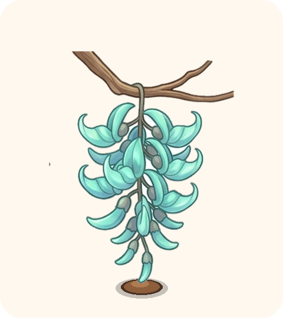
- レア度: ★4 希少で神秘的な花
- 解放される日: PREMIUMの継続日数が291日目になると、植えられるようになります。
- 必要なクローバー: 22個（片付けて「クローバーに戻す」と、同じ数が戻ります）。
- 咲くまでの日数: 標準の大きさで約11日（植えるたびに大きさがランダムで決まり、大きいほど日数が長くなります）。
本物のヒスイカズラについて
フィリピン・ルソン島などの限られた熱帯雨林にのみ自生するマメ科の大型つる植物です。春（3〜5月ごろ）に、自然界では極めて珍しい透き通るような翡翠（エメラルド・ターコイズ）色の花を長い房状に咲かせます。
花言葉は「私を忘れないで」など。
ゴーストオーキッド（幽霊蘭）（Ghost Orchid）
葉を持たず、空中に浮かぶように咲く幻の白いラン
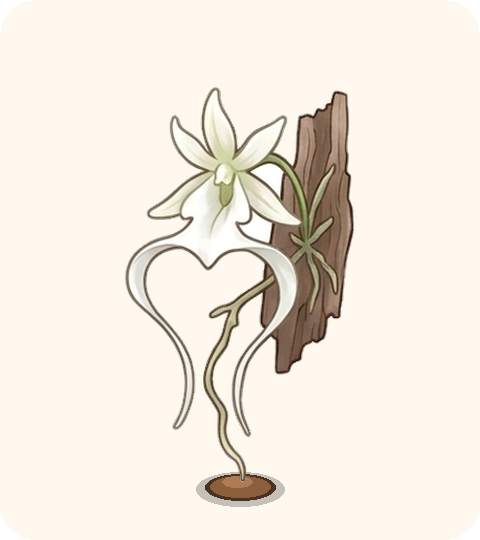
- レア度: ★4 希少で神秘的な花
- 解放される日: PREMIUMの継続日数が301日目になると、植えられるようになります。
- 必要なクローバー: 23個（片付けて「クローバーに戻す」と、同じ数が戻ります）。
- 咲くまでの日数: 標準の大きさで約11日（植えるたびに大きさがランダムで決まり、大きいほど日数が長くなります）。
本物のゴーストオーキッドについて
アメリカ・フロリダ州の湿地帯やキューバの奥地にのみ自生する極めて希少な着生ランです。葉を持たず、木の幹に張った根から細い花茎を伸ばし、夏（6〜8月ごろ）に純白の花が空中に浮かぶように咲きます。
花言葉は「神秘」「幻の美」など。
キンカチャ（金花茶）（Golden Camellia）
「東洋の幻」と呼ばれた、蝋のように輝く黄金色の椿
- レア度: ★5 伝説・秘境の幻の花
- 解放される日: PREMIUMの継続日数が311日目になると、植えられるようになります。
- 必要なクローバー: 24個（片付けて「クローバーに戻す」と、同じ数が戻ります）。
- 咲くまでの日数: 標準の大きさで約12日（植えるたびに大きさがランダムで決まり、大きいほど日数が長くなります）。
本物のキンカチャ（金花茶）について
中国南部（広西チワン族自治区など）とベトナム北部の限られた地域に自生するツバキ属の希少種です。1965年に学術発表されるまで幻とされ、冬〜春（1〜3月ごろ）に鮮やかな黄金色の花を咲かせます。
花言葉は「控えめな美しさ」「誇り」「高貴」など。
カドゥプル（Kadupul Flower）
スリランカの森で年に数度、真夜中だけ咲く天女の花
- レア度: ★5 伝説・秘境の幻の花
- 解放される日: PREMIUMの継続日数が321日目になると、植えられるようになります。
- 必要なクローバー: 25個（片付けて「クローバーに戻す」と、同じ数が戻ります）。
- 咲くまでの日数: 標準の大きさで約12日（植えるたびに大きさがランダムで決まり、大きいほど日数が長くなります）。
本物のカドゥプルについて
スリランカで古くから「天上の花」と語り継がれる夜咲きのサボテンの花（月下美人の近縁種）です。真夜中に数時間だけ純白の大輪を開き、夜明け前に散ってしまうため、摘み取ることも売買することもできない「世界で最も高価な幻の花」として知られます。
花言葉は「奇跡」「祝福」など。
ミドルミスト・レッド（Middlemist Red）
世界にわずか2株のみ現存する、最も希少な深紅の椿
- レア度: ★5 伝説・秘境の幻の花
- 解放される日: PREMIUMの継続日数が331日目になると、植えられるようになります。
- 必要なクローバー: 26個（片付けて「クローバーに戻す」と、同じ数が戻ります）。
- 咲くまでの日数: 標準の大きさで約12日（植えるたびに大きさがランダムで決まり、大きいほど日数が長くなります）。
本物のミドルミスト・レッドについて
19世紀初頭に中国からイギリスへ持ち込まれたツバキの希少品種です。現在確認されているのは、イギリス・ロンドンのチズウィック・ハウスとニュージーランドの温室にあるわずか2か所のみとされ、「世界で最も希少な花」のひとつに数えられます。
花言葉は「気高き愛」「奇跡の出会い」など。
ヒマラヤの青いケシ（メコノプシス）（Himalayan Blue Poppy）
標高4,000mの高山に咲く、「天上の妖精」

- レア度: ★5 伝説・秘境の幻の花
- 解放される日: PREMIUMの継続日数が341日目になると、植えられるようになります。
- 必要なクローバー: 27個（片付けて「クローバーに戻す」と、同じ数が戻ります）。
- 咲くまでの日数: 標準の大きさで約13日（植えるたびに大きさがランダムで決まり、大きいほど日数が長くなります）。
本物のヒマラヤの青いケシについて
ヒマラヤ山脈や中国南西部の標高3,000〜5,000mの高山に自生するケシ科（メコノプシス属）の多年草です。初夏（6〜7月ごろ）に澄んだ空色の花びらと黄金色のしべを咲かせます。暑さに弱く栽培が非常に難しい希少な花です。
花言葉は「底知れぬ魅力をたたえた」「慰め」など。
バオバブの花（Baobab Blossom）
サバンナの巨木にただ一夜だけ咲く、白い大輪と黄金の房
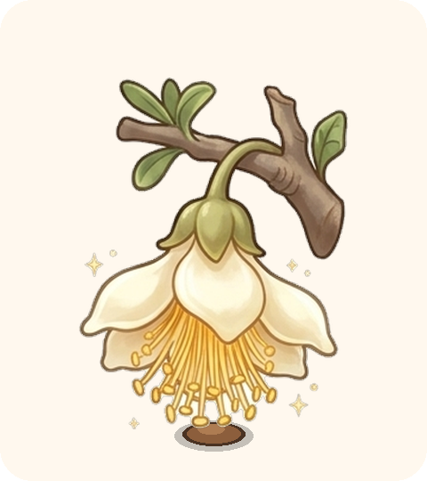
- レア度: ★5 伝説・秘境の幻の花
- 解放される日: PREMIUMの継続日数が351日目になると、植えられるようになります。
- 必要なクローバー: 28個（片付けて「クローバーに戻す」と、同じ数が戻ります）。
- 咲くまでの日数: 標準の大きさで約13日（植えるたびに大きさがランダムで決まり、大きいほど日数が長くなります）。
本物のバオバブの花について
アフリカやマダガスカルに自生し、樹齢数千年にもなる巨木バオバブの花です。雨季の夕方から夜にかけて枝先から下向きに純白の大きな花を開き、たくさんの黄金色の雄しべを広げますが、翌朝には散ってしまう神秘的な一夜花です。
花言葉は「長寿」「生命力」「見守る愛」など。
ブルーローズ（青いバラ）（Blue Rose）
1年の締めくくりに咲く、「不可能」を「夢かなう」に変えた幻の花
- レア度: ★5 伝説・秘境の幻の花
- 解放される日: PREMIUMの継続日数が361日目になると、植えられるようになります。
- 必要なクローバー: 30個（片付けて「クローバーに戻す」と、同じ数が戻ります）。
- 咲くまでの日数: 標準の大きさで約14日（植えるたびに大きさがランダムで決まり、大きいほど日数が長くなります）。
本物のブルーローズについて
バラには青い色素（デルフィニジン）をつくる力がなく、長いあいだ「不可能」の象徴とされてきました。2004年、サントリーと海外の企業がパンジーの青い色素をつくる遺伝子を用いて開発を発表し、2009年に「サントリーブルーローズ アプローズ」として発売されました。
それ以降、花言葉は「不可能」から「夢かなう」「奇跡」「神の祝福」へと変わりました。
❓ よくある質問（FAQ）
Q 特別な花はどうすれば植えられますか？
PREMIUMにご登録のうえ、庭タブの花を選ぶシートの「特別な花」タブから植えます。登録した日から最初の花を選べ、継続日数が解放の日数に届いた花から、順に増えていきます。
Q 新しい特別な花が増えるのは、いつですか？
登録した日に最初の1種類、そのあとは、登録した日を1日目として数え、10日ごとに1種類ずつ、1年分（361日目まで）の全37種類が増えていきます。「特別な花」タブに、次の花まであと何日かが表示されます。
Q 特別な花は、通常の花とどう違いますか？
PREMIUMだけが植えられること、植えるたびに大きさがランダムで決まること、咲いたときに庭で淡くきらめくことが違います。植えたあとの育ち方・移動・クローバーに戻す操作は、通常の花と同じです。